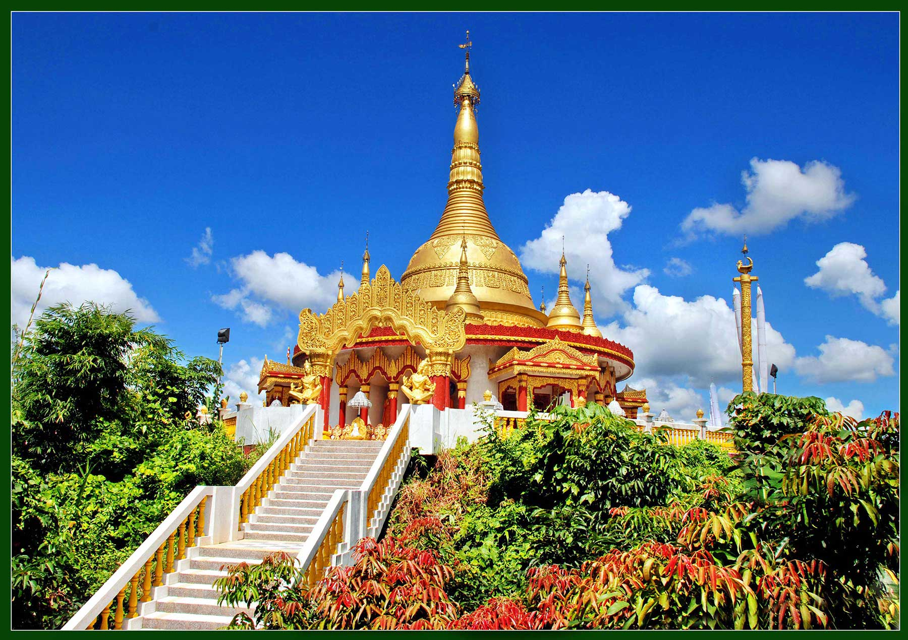

2 / 8

Rangamati
3 / 8

Buddhamandir Bandarban
4 / 8

Cox's Bazar
5 / 8
.jpg)
Nilachal Bandarban
6 / 8

Nilgiri Bandarban
7 / 8
.jpg)
Patenga sea beach
8 / 8

Saint Martin Island
Rangamati:
A small town located amongst the green hills, lakes and rivers of the Chittagong Hill Tracts. This is what makes it a prime Bangladesh hill destination. It is known as the Lake City of Bangladesh as this place is located on the bank of the beautiful Kaptai Lake.
Alutila Cave:
also called Alutila Mysterious Cave is a cave located in Matiranga Upazila in hill district of Khagrachari, Bangladesh. The cave formed inside the 1000-meter-high hill named Alutila (potato hill) or Arbari Hill. The hill area is surrounded by deep green forest. The cave is 100 meters long. It has a natural subway-like shape with cold water flowing at bottom. The cave is so dark that torches or locally sold flambeaux are used to see well enough to walk around the cave.
Cox's bazar:
The beach in Cox's Bazar is an unbroken 120 km (75 mi) sandy sea beach with a gentle slope, is the world's longest.It is located 150 km (93 mi) south of the industrial port Chittagong. Cox's Bazar is also known by the name Panowa, whose literal translation means "yellow flower." Its other old name was "Palongkee".oday, Cox's Bazar is one of the most-visited tourist destinations in Bangladesh, though it is not a major international tourist destination. In 2013, the Bangladesh Government formed the Tourist Police unit to better protect local and foreign tourists, as well as to look after the nature and wildlife in the tourist spots of Cox's Bazar.
Buddha Dhatu Jadi:
The Buddha Dhatu Jadi (also known as the Bandarban Golden Temple) is located close to Balaghata town, in Bandarban City, in Bangladesh. Dhatu are the material remains of a holy person, and in this temple the relics belong to Buddha. It is the largest Theravada Buddhist temple in Bangladesh and has the second-largest Buddha statue in the countryThe Bandaban Golden Temple belongs to the Theravada Buddhism order, which is practiced by the Marma indigenous people, a dominant ethnic group of Bandarban. It was built in 2000 in Arakanese architecture, an adoption of South East Asia style.
Patenga sea beach:
Patenga is a popular tourist spot. The beach is very close to the Bangladesh Naval Academy of the Bangladesh Navy and Shah Amanat International Airport. Its width is narrow and swimming in the seas is not recommended. Part of the seashore is built-up with concrete walls, and large blocks of stones have been laid to prevent erosion. During the 1990s, a host of restaurants and kiosks sprouted out around the beach area. Lighting of the area has enhanced the security aspect of visiting at night.
Nowadays, alcohol peddling is very common at the beach. Vendors from the city sell their ice creams, cold drinks and food to the hundreds of tourists who come to Patenga Beach. According to the local people, Patenga is the best place for delicious, mouth-watering street food at very low costs. One of the popular dishes of the food stands is the fried, spicy mud crab served with a small plate full of falafel, garnished with cucumber and onion. The beach has a wonderful cool atmosphere even at the evening, and people come to enjoy the soothing breeze. The beach is lined with massive shady palm trees and fishing boats. It also has an array of speed boats for visitors. The beach, however, is quite sandy, with a few rocky patches.
Saint Martin Island:
St. Martin's Island is a small island (area only 8 km2) in the northeastern part of the Bay of Bengal, about 9 km south of the tip of the Cox's Bazar-Teknaf peninsula, and forming the southernmost part of Bangladesh. There is a small adjoining island that is separated at high tide, called Chera Dwip. It is about 8 kilometres (5 miles) west of the northwest coast of Myanmar, at the mouth of the Naf River. The first settlement started 250 years ago by Arabian sailors who named the island 'Jazeera'. During British occupation the island was named St. Martin Island. During the First Anglo-Burmese War between the British and Burmese empires in 1824–1826, rival claims to the island were a major factor. The local names of the island are "Narikel jinjira"[3] which means 'Coconut Island' in Bengali, and "Daruchini Dwip". It is the only coral island in Bangladesh.